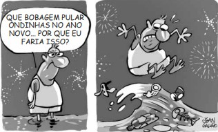
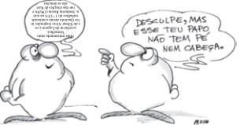
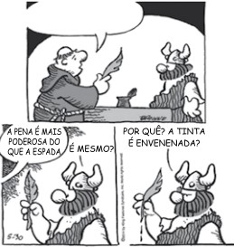

1. Considere a passagem do segundo parágrafo:
O turismo representa para muitos um modo de se reapropriar do mundo. Só que antes a experiência da viagem era decisiva, voltávamos diferentes do que éramos ao partir...
No contexto, a expressão destacada introduz uma oração que estabelece com a anterior relação cujo sentido é de
2. A frase do segundo parágrafo – ... visitou lugares com os quais eu (...) ainda me limito a sonhar. – permanece em conformidade com a norma-padrão de regência verbal e com sentido compatível ao do texto original com o verbo destacado substituído por:
3. Assinale a alternativa em que, com a inserção da vírgula na passagem do texto, a redação atende à norma-padrão de pontuação.
4. São todas acentuadas em atendimento à mesma regra de acentuação gráfica as seguintes palavras extraídas do texto:
5. Considere as passagens do texto:
• O menino me olhou como se eu viesse de Saturno...
(2o parágrafo)
• ... submeter-se às aulas de Educação física para obter
seu diploma. (2o parágrafo)
• Em outras palavras, os especialistas deveriam se impor por sua competência... (4oparágrafo)
No contexto em que estão inseridos, os termos destacados expressam, respectivamente, sentidos de
6. Leia o texto para responder à questão.
Mundo arriscado
O próximo governo não encontrará um ambiente econômico internacional sereno. Dúvidas sobre a continuidade do crescimento do Produto Interno Bruto global, juros em alta nos EUA, riscos de conflitos comerciais e de queda do fluxo de capitais para países emergentes são apenas alguns dos itens de um cardápio de problemas potenciais.
Tudo indica, assim, que o governo brasileiro terá de lidar de pronto com as fragilidades domésticas, em especial o rombo das contas públicas. Não tardará até que investidores hoje aparentemente otimistas comecem a cobrar resultados concretos.
As projeções para o avanço do PIB mundial têm sido reduzidas nos últimos meses. O Fundo Mo netário Internacional cortou sua previsão para 2018 e 2019 em 0,2 ponto percentual – 3,7% em ambos os anos – e apontou um cenário de menor sincronia entre os principais motores regionais. Se até o início deste ano EUA, Europa e China davam sinais de vigor, agora acumulam-se decep ções nos dois últimos casos.
Mesmo com juros ainda perto de zero, a zona do euro não deverá crescer mais que 1,5% neste ano. Há crescente insegurança no âmbito político, neste momento centrada na Itália e seu governo de direita populista, que propõe expansão do déficit de um setor público já endividado em excesso. Não é animador que a Comissão Europeia tenha tomado a decisão inédita de rejeitar a proposta orçamentária da administração italiana. Embora o país ainda conserve o selo de bom pagador, os juros cobrados no mercado para financiar sua dívida dispararam.
Quanto à China, sua economia mostra menos vigor, e as autoridades precisam tomar decisões difíceis entre conter as dívidas já exageradas e estimular o crescimento. O risco de escalada nos conflitos comerciais também é concreto, dado que o governo americano ameaça impor uma terceira rodada de tarifas, desta vez sobre os US$ 270 bilhões em vendas anuais chinesas que ainda não foram taxadas.
Nos EUA, a alta dos juros, num contexto de emprego elevado e inflação perto da meta, já leva parte do mercado a temer uma desaceleração abrupta do PIB em 2019. A vantagem do Brasil, hoje, é que há ampla ociosidade nas empresas, baixa inflação e, portanto, espaço para uma retomada mais forte.
(Editorial. Folha de S.Paulo, 01.11.2018. Adaptado)
_________________dúvidas sobre a continuidade do crescimento do Produto Interno Bruto global. Como se ____________ as suas projeções nos últimos meses, o FMI cortou a previsão para 2018 e 2019 em 0,2 ponto percentual. Em alguns países, os juros cobrados para o financiamento de suas dívidas ______________
De acordo com a norma-padrão, as lacunas dos enunciados devem ser preenchidas, respectiva mente, com:
7. Leia o texto e responda à questão.
Assassinos culturais
Sou um assassino cultural, e você também é. Sei que é romântico chorar quando uma livraria fe cha as portas. Mas convém não abusar do romantismo – e da hipocrisia. Fomos nós que matamos aquela livraria e o crime não nos pesa muito na consciência. Falo por mim. Os livros físicos que entram lá em casa são cada vez mais ofertas – de amigos ou editoras.
Aos 20, quando viajava por territórios estranhos, entrava nas livrarias locais como um faminto na capoeira. Comprava tanto e carregava tanto que desconfio que o meu problema de ciática é, na sua essência, um problema livresco.
Hoje? Gosto da flânerie*. Mas depois, fotografo as capas com o meu celular antes de regressar para o psicanalista – o famoso dr. Kindle. Culpado? Um pouco. E em afirmar que pago pelos meus vícios.
E quem fala em livrarias, fala em todo o resto. Eu também ajudei a matar a Tower Records e a Virgin Megastore. Havia lá dentro uma bizarria chamada CD – você se lembra?
Hoje, com alguns aplicativos, tenho uma espécie de discoteca de Alexandria onde, a meu bel-pra zer, escuto meus clássicos e descubro novos. Se juntarmos ao pacote o iTunes e a Netflix, você percebe por que eu também tenho o sangue dos cinemas e dos blockbusters nas mãos.
Eis a realidade: vivemos a desmaterialização da cultura. Mas não é apenas a cultura que se des materializa e tem deixado as nossas salas e estantes mais vazias. É a nossa relação com ela. Não somos mais proprietários de “coisas”; somos apenas consumidores e, palavra importante, assinan tes.
O livro “Subscribed”, de Tien Tzuo, analisa a situação. É uma reflexão sobre a “economia de as sinaturas” que conquista a economia global. Conta o autor que mais de metade das empresas da famosa lista da “Fortune” já não existiam em 2017. O que tinham em comum? O objetivo meritório de vender “coisas” – muitas coisas, para muita gente, como sempre aconteceu desde os primór dios do capitalismo.
Já as empresas que sobreviveram e as novas que entraram na lista souberam se adaptar à econo mia digital, vendendo serviços (ou, de forma mais precisa, acessos).
Claro que na mudança algo se perde. O desaparecimento das livrarias não acredito que seja total no futuro (e ainda bem). Além disso, ler no papel não é o mesmo que ler na tela.
Mas o interesse do livro de Tzuo não está apenas nos números; está no retrato de uma nova gera ção para quem a experiência cultural é mais importante do que a mera posse de objetos.
Há quem veja aqui um retrocesso, mas também é possível ver um avanço – ou, para sermos bem f ilosóficos, o triunfo do espírito sobre a matéria. E não será essa, no fim das contas, a vocação mais autêntica da cultura?
(João Pereira Coutinho. Folha de S.Paulo, 28.08.2018. Adaptado)
* Flânerie: ato de passear, de caminhar sem compromisso.
Assinale a alternativa redigida em conformidade com a norma-padrão de concordância.
8. A expressão “ou seja”, em destaque na passagem, introduz, em relação ao trecho que a antecede,
9. Assinale a alternativa em que as palavras estão acentuadas obedecendo à mesma regra que determina a acentuação, respectivamente, das palavras “vários” e “análogas”.
10. Assinale a alternativa que substitui a expressão em destaque na passagem “ ... ainda hoje, a escravidão persiste, só que agora é multiétnica.”, preservando a relação de sentido do original.
11. Assinale a alternativa que reescreve livremente trecho do texto de acordo com a norma-padrão de regência nominal e verbal.
12. Na passagem “... fica faltando dizer que se encerrou a escravidão negra...”, o pronome “se” é empregado indicando que o sujeito é paciente da ação verbal, como ocorre também em:
13. A alternativa em que todas as palavras estão corretamente grafadas é:
Leia a tira, para responder às questões de números 14 e 15.
14. O comentário do garoto Calvin, no último quadrinho, sugere que
(Bill Watterson. Calvin e Haroldo. Disponível em:
<http://tiras-do-calvin.tumblr.com.>
Acesso em: 09 de maio de 2018)
15. Assinale a alternativa que dá outra redação a uma das falas da tira mantendo-a de acordo com a norma-padrão.
16. Assinale a alternativa que expressa adequadamente o sentido contextual das palavras “impassível” e “altivo”, em destaque no início do segundo parágrafo.
17. A frase em que a palavra destacada está empregada em sentido conotativo (figurado) é:
18. Assinale a alternativa em que, segundo a norma-padrão, o pronome, na expressão destacada, pode ser colocado também depois do verbo.
19. Assinale a alternativa que substitui a conjunção destacada na passagem “Aí foram buscar dois escravos. E esses,mesmo duramente açoitados, negaram-se a participar da execução.”, preservando a relação de sentido do original.
20. A alternativa que reescreve o trecho “O juiz então ordenou que ele fosse fuzilado.”, de acordo com a norma-padrão de emprego e colocação de pronome, é:
21. Observe a relação temporal entre as situações expressas pelos verbos destacados nos seguintes trechos:
(I)
No dia 13 de janeiro de 1825, um condenado caminhava
com passos firmes na direção da forca, no centro do
Recife.
(II) Ele tinha participado da revolta da Confederação do Equador.
(III) Vestia o hábito da Irmandade da Madre de Deus.
É correto concluir que
22. Assinale a alternativa que expressa com regência correta, nos colchetes, ideia em oposição à do texto original.
23. Na passagem “blasfemou, e o crucifixo de bronze soltou-se da parede e quebrou-lhe o crânio”, o trecho destacado expressa, em relação à ação de blasfemar,ideia de
Leia o texto, para responder às questões de números 24 a 28.
O exorcismo
24. É correto afirmar que o termo “a”, no trecho “não a ajuda”, é
25. As palavras do texto que se associam por compartilharem um núcleo comum de sentido são:
26 Na pronúncia, as palavras “mau” e “porque”, destacadas nos dois últimos parágrafos do texto, muitas vezes não se distinguem de “mal” e “por que”, o que acaba por refletir-se em emprego inadequado delas, na escrita. Assinale a alternativa em que essas palavras estão corretamente empregadas no contexto.
27 A criação da palavra “fumaçarada” associa fumaçada e fumarada, formadas a partir de fumaça. É correto afirmar que a palavra criada produz efeito estilístico compatível com a ideia de
28. Assinale a alternativa que preenche as lacunas do enunciado a seguir, de acordo com a norma-padrão de concordância.
____________ proporções do acidente,____________ as vias da
redondeza, ficando____________às pessoas trafegar pelo
local, pois ainda____________focos de incêndio____________.
29. Em – Com isso, o limite de álcool passou a ser uma das formas de se comprovar a embriaguez, e não mais um requisito de punição. –, sem que seja alterado o sentido do trecho, a expressão em destaque pode ser substituída por:
30. A palavra em destaque no trecho – Já para o juiz criminal de São Paulo, Fábio Munhoz Soares, (...) a mudança “é um avanço”. – tem seu sentido contrário expresso em:
31. Assinale a alternativa cuja preposição em destaque expressa ideia de finalidade.
32. Considerando que o termo em destaque em – Esse valor é dobrado caso caso o motorista seja reincidente em um ano. –estabelece relação de condição entre as orações, assinale a alternativa que apresenta o trecho corretamente reescrito, e com seu sentido inalterado.
33. Em – Agora, passa a ser crime “conduzir veículo automotor com capacidade psicomotora alterada em razão da influência de álcool...” –, o termo grifado introduz a ideia de
34. Considerando que o termo em destaque em – Segundo especialistas, recusar o bafômetro não vai mais impedir o processo criminal... – introduz ideia de conformidade, assinale a alternativa que apresenta a frase corretamente reescrita, e com seu sentido inalterado
35. Considere o trecho a seguir:
A bolsa pertencia certamente à moça morena que viajara ao meu lado, e de quem eu vira apenas o perfil. Sentara-se, abrira o livro e mergulhara na leitura. Absorta na leitura, ao sair esquecera o objeto...
As expressões em destaque no trecho são utilizadas pelo autor para enfatizar a ideia de que a mulher estava
36. Em – Procurei a esmo entre as coisinhas, não achei elemento esclarecedor. –, a expressão em destaque pode ser corretamente substituída, sem que seja alterado o sentido da frase, por:
37. Em – Jamais em minha vida achei na rua ou em qualquer parte do globo um objeto qualquer. –, o termo em destaque introduz ideia de
38. Em – O destino me prestava esse pequeno favor: completava minha identificação com o resto da humanidade, que tem sempre para contar uma história de objeto achado; – o pronome em destaque retoma a seguinte palavra/expressão:
39. Assinale a alternativa em que o termo em destaque expressa circunstância de posse.
40. Considere o trecho:
– Leve para casa – ponderou meu conselheiro, como quem diz: – É sua. Mas acrescentou: – procure direito e o endereço aparece.
Sem que seja alterado o sentido do texto e de acordo com a
norma-padrão da língua portuguesa, o termo em destaque
pode ser corretamente substituído por:
41. Considere o trecho apresentado a seguir:
O destino me prestava esse pequeno favor: completava minha
identificação com o resto da humanidade...
Alterando apenas o tempo dos verbos destacados para o tempo
presente, sem qualquer outro ajuste, tem-se, de acordo com a
norma-padrão da língua portuguesa:
42. Assinale a alternativa correta quanto à colocação pronominal, de acordo com a norma-padrão da língua portuguesa.
43. Considere o trecho a seguir.
É comum que objetos ____________ esquecidos em locais públicos. Mas muitos transtornos poderiam ser evitados se as pessoas ____________ a atenção voltada para seus pertences, conservando-os junto ao corpo.
Assinale a alternativa que preenche, correta e respectivamente, as lacunas do texto.
44. Assinale a alternativa em que a pontuação está corretamente empregada, de acordo com a norma-padrão da língua portuguesa.
Leia a tirinha para responder às questões de números 45 e 46.
(Quino, Toda Mafalda. São Paulo: Martins Fontes, 2010)
45. Em – ... “Responder com simplicidade e clareza às perguntas dos filhos”.... – a palavra em destaque expressa, no contexto em que é empregada, ideia de
46. Considerando as regras de concordância nominal e verbal, de acordo com a norma-padrão da língua portuguesa, assinale a alternativa correta.
47. No trecho – O estúdio usará ainda um programa capaz de simular… – a palavra destacada estabelece sentido de
48. Na frase – ... o estúdio terá a missão de se tornar uma referência de retratos falados... – a palavra destacada pode ser substituída, sem alteração de sentido, por
49. No contexto em que foi empregada, a expressão – com precisão apresenta sentido contrário de
50.Na frase – A Polícia Civil de São Paulo terá um estúdio com sistemas avançados para produzir retratos falados…
– a palavra destacada estabelece sentido de
51. Na frase – Os policiais já estão sendo treinados… – o advérbio destacado expressa sentido de
52. Assinale a alternativa cuja frase está com pontuação correta, de acordo com a norma-padrão da língua portuguesa.
Leia o texto a seguir para responder às questões de números 53 a 55.
Falsários praticavam golpes do seguro desemprego
Policiais civis da capital prenderam dois falsários com grande quantidade de carteiras profissionais,53. De acordo com o texto, a informação recebida pelos policiais não coincidiu com os fatos porque o rapaz suspeito
54. Da leitura do texto, é correto concluir que os policiais
55. No trecho – … suspeitaram de um rapaz e resolveram abordá-lo… (2.º parágrafo) – passando-se os verbos destacados para o tempo presente, correta e respectivamente, tem-se:
56. Assinale a alternativa em que a concordância das palavras está de acordo com a norma-padrão da língua portuguesa.
Considere o texto da figura a seguir para responder às questões de números 57 e 58.
Polícia Civil prende dois falsários que praticavam
golpes do seguro desemprego.
57. O adjetivo falsários pode ser substituído, sem alteração de sentido, por
58. Os tempos verbais contidos no texto da figura indicam, correta e respectivamente,
59. Assinale a alternativa em que a colocação dos pronomes está de acordo com a norma-padrão da língua portuguesa.
Leia a seguir, trechos do Hino da Polícia Civil (Homenagem aos 100 anos), para responder às questões de números 60 a 62.
Companheiros, sempre avante
Pela nossa Polícia Civil
Combatendo sempre o mal
Batalhando por nosso Brasil.
(...)
60. Os versos da primeira parte do Hino expressam a ideia de estímulo
61. Mantendo-se o mesmo sentido, o trecho – E jamais vamos esmorecer – pode ser reescrito da seguinte forma:
62. Se preciso, morreremos
mas cumprindo o nosso dever.
As palavras destacadas trazem, correta e respectivamente,
a ideia de
63. Assinale a alternativa em que o acento indicativo da crase está empregado de acordo com a norma-padrão da língua portuguesa.
64. Assinale a alternativa que preenche, correta e respectivamente, as lacunas da frase, considerando a norma-padrão da língua portuguesa.
____________ programas de computador ____________ desenhar rostos com perfeição.65. Assinale a alternativa que preenche, correta e respectivamente, as lacunas da frase, considerando a norma-padrão da língua portuguesa.
Os delegados jamais ____________ alertaram sobre uma lei ____________ nunca ____________.66. As expressões mais denso e menos trânsito, no título, estabelecem entre si uma relação de
67. Assinale a alternativa em que a frase do primeiro parágrafo – Existem deficiências evidentes em infraestrutura, mas é importante também considerar o planejamento urbano. – está reescrita corretamente e sem alteração da mensagem.
68. Observe o trecho do último parágrafo.
Desse modo, será possível reverter esse processo de uso cada vez mais intenso do transporte individual, fruto não só do novo acesso da população ao automóvel, mas também da necessidade de maior número de viagens em função da distância cada vez maior entre os destinos da população.
A palavra que substitui, sem alteração de sentido, o termo fruto, tal como empregado no texto, é
69. Observe a primeira frase do texto.
As grandes cidades brasileiras estão congestionadas e em processo de deterioração agudizado pelo crescimento econômico da última década.
Assinale a alternativa que apresenta um antônimo para o termo destacado.
70. Leia o cartum de Jean Galvão.
(https://www.facebook.com/jeangalvao.cartunista)
Considerando a relação entre a fala do personagem e a imagem visual, pode-se concluir que o que o leva a pular a onda é a necessidade de
71. Assinale a alternativa em que a frase do texto se mantém correta após o acréscimo das vírgulas.
72. Assinale a alternativa que substitui, corretamente e sem alterar o sentido da frase, a expressão destacada em – Se a criança se perder, quem encontrá-la verá na pulseira instruções para que envie uma mensagem eletrônica ao grupo ou acione o código na internet.
73. Considerando as regras de regência verbal, assinale a alternativa que completa, correta e respectivamente, as lacunas da frase.
A ONG Anjos do Verão colabora ____________ trabalho do Corpo de Bombeiros, empenhando-se ____________ encontrar crianças perdidas.74. Assinale a alternativa que completa corretamente a lacuna do texto.
O fato de a menina saber que havia o desenho de um índio na porta do prédio mostrou-se ____________ para que ela soubesse voltar para casa sozinha.75. Observe a passagem do penúltimo parágrafo.
Lá pelos anos 70, sem celular, iPhone, iPad ou outras tantas muletas, a estratégia foi cada integrante da família se dividire fixar um tempo para voltar à porta do prédio. Estavam todos lá, minha mãe, primos, tia, o sorveteiro, as duas mulheres e eu – ainda muda.
O termo lá, nas expressões Lá pelos anos 70 e Estavam todos lá, expressa ideia de76. Assinale a alternativa correta quanto à regência dos termos em destaque.
77. Assinale a alternativa em que a concordância das formas verbais destacadas se dá em conformidade com a norma-padrão da língua.
78. Assinale a alternativa em que a frase está reescrita corretamente, em conformidade com a norma-padrão da língua.
Encontram-se na praia, todos os anos, centenas de crianças perdidas da família.79. Assinale a alternativa em que o acento indicativo de crase está empregado corretamente.
80. Assinale a alternativa em que o acento indicativo de crase está empregado corretamente.
81. Leia a charge.
(Pancho. Gazeta do Povo, 28.09.2014)
Ao dizer que o papo “não tem pé nem cabeça”, a personagem sugere que a conversa do amigo está sendo82. Na frase do primeiro parágrafo – Alunos com dificuldades nos colégios da região enxergam ali a possibilidade de um recomeço. –, o verbo enxergar tem o mesmo sentido e emprego que o destacado em:
83. Assinale a alternativa correta quanto à concordância verbal.
84. Mantendo-se os sentidos do texto, o período – Vários professores não se adaptaram e pediram transferência.– pode ser reescrito da seguinte forma:
85. Leia a tira.
(Dik Browne. “Hagar”. Folha de S.Paulo, 20.12.2014. Adaptado)
Assinale a alternativa em que a frase preenche corretamente o balão da fala da personagem no primeiro
quadrinho, em conformidade com a norma-padrão da língua portuguesa.
86. No trecho do último parágrafo… – é máquina de amansar doido… –, o termo em destaque é antônimo de
87. Assinale a alternativa em que a preposição em destaque está corretamente empregada, de acordo com a norma-padrão e os sentidos do texto.
88. Não há dúvida _____ a televisão pode prejudicar o movimento da pracinha Jerônimo Monteiro. Ela pode, até mesmo, causar prejuízo _____ uma boa conversa ou impedir um menino de ir _____ rua jogar bola.
De acordo com a norma-padrão da língua portuguesa, as lacunas das frases devem ser preenchidas, respectivamente, com:89. De acordo com a norma-padrão, o trecho – Eu mesmo confesso que lia mais quando não tinha televisão. Rádio, a gente pode ouvir baixinho, enquanto está lendo um livro. –, transposto para a primeira pessoa do plural, assume a seguinte redação.
Para responder às questões de números 20 e 21, considere o período do terceiro parágrafo:
Rádio, a gente pode ouvir baixinho, enquanto está lendo um livro. Televisão é incompatível com livro...
91. Assinale a alternativa correta quanto à pontuação.
92. Assinale a alternativa em que a preposição em destaque inicia uma expressão indicativa de lugar.
Para responder às questões de números 04 e 05, considere
a seguinte passagem do primeiro parágrafo.
Nada disso, no entanto, impede que, quando cresçam, muitas pessoas sejam incapazes de negar um pedido, não importa de onde venha.
94. Assinale a alternativa que substitui o trecho destacado em – não importa de onde venha–, atendendo à norma-padrão de regência e conjugação verbal, independentemente do sentido do texto.
95. A substituição do trecho destacado na passagem do primeiro parágrafo – … sua equipe abordava estranhos na rua e pedia que fizessem alguma coisa inesperada. – está de acordo com a norma-padrão de emprego e colocação dos pronomes em:
96. O trecho destacado na passagem do segundo parágrafo – Por isso, se uma pessoa lhe pede um favor, a reação natural é colaborar com ela. – está corretamente redigido e preserva o sentido original em:
97. A função sintática do trecho destacado em – Albert Einstein, um dos mais brilhantes angustiados, escreveu:.. – é de
98. Observe a acentuação das palavras início, bebês, raízes, inóspitos, e assinale a alternativa que apresenta, pela ordem, as palavras acentuadas segundo as mesmas regras de acentuação dessas.
99. Assinale a alternativa em que os verbos estão empregados de acordo com a norma-padrão.
100. Assinale a alternativa em que a função sintática das orações destacadas (I) e (II) nas passagens a seguir está corretamente identificada.
… não querem mais (I) mamar. (primeiro parágrafo)A dificuldade de (II) negar ajuda ou pedido tem raízes na pré-história (segundo parágrafo)
101. A alternativa em que o termo “se”, em destaque no enunciado, está presente em uma construção de voz passiva é:
Leia a tira, para responder à questão.
(Ciça, Pagando o pato)
102. É correto concluir que o efeito de sentido da tira está centrado103. Considere a passagem do primeiro parágrafo: Se uma delas tomava o bonde, três, quatro ou cinco jovens se arremessavam. E a boa e ofegante senhora tinha seu canto, tinha seu espaço.
Do ponto de vista semântico, a oração iniciada pela conjunção “E” introduz informação cuja noção é, em relação à oração precedente, de104. Assinale a alternativa que explica corretamente o emprego da vírgula na passagem do primeiro parágrafo – E, de repente, o ônibus para, e entra, exatamente, uma senhora grávida.
105. Assinale a alternativa em que os sinais indicativos de crase estão empregados de acordo com a norma-padrão.
106. Assinale a alternativa em que todas as palavras estão corretamente grafadas.
107. Os vícios de linguagem que podem ser identificados nesse texto são